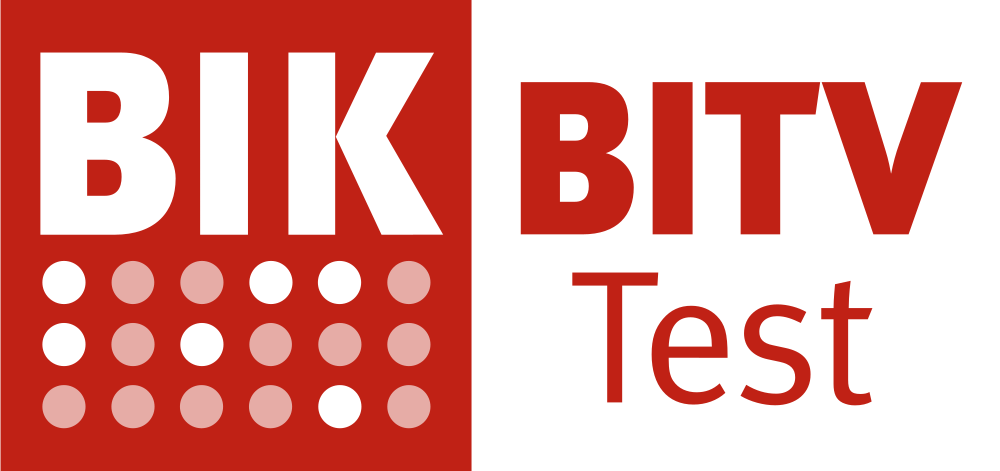
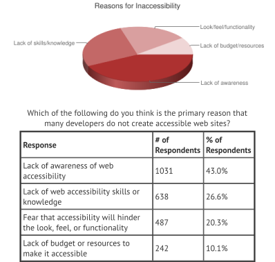
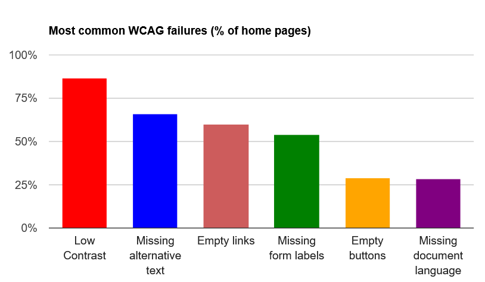

Barrierefreie Potenziale
Momentaufnahmen zur Barrierefreiheit im Web
Organisatorisches
- Folien online unter https://jkphl.is/slides/capito/2020
- Barrierefreiheit im Vortrag: Bitte Hinweis bei Unverständlichkeit / Unklarheit
- Fokus auf Websites, vieles aber auch anwendbar auf andere digitale oder Print-Produkte
- Wortmeldungen & Fragen gerne in der Pause oder am Ende des Vortrags
Momentaufnahmen
- Über mich
- Über tollwerk
- Barrierefreiheit im Web
- Stand der Dinge
- Hallo, ich hätte gern …
- Potenziale
Über mich
Hintergrund & Aufgaben
Wer ist der Kerl?
- › Erste Codezeilen als 10-Jähriger, Websites seit 1995
- › Ausbildung im Architektur- und Designumfeld
- › Web- & Werbeagentur tollwerk in Nürnberg seit 2000
- › IAAP Web Accessibility Specialist (WAS)
- › TYPO3 CMS Certified Developer (TCCD)
Was macht der Kerl?
- › Unternehmer, Programmierer, Designer & Berater
- › BITV- / WCAG-Prüfer im BITV-Test-Prüfverbund
- › Ausbilder für Mediengestalter & Fachinformatiker
- › Lehrbeauftragter für Content Management
- › Veranstalter (Accessibility Club, CoderDojo Nürnberg …)
Über tollwerk
Leistungen & Schwerpunkte
Gleicher Zugang für alle
Web- & Werbeagentur
- Gegründet 2000
als »Full-Service-Agentur« - Über die Jahre: Verlagerung zu immer mehr Webprojekten
- Seit 2016: Ausdrückliche Positionierung in der Barrierefreiheit
Barrierefreie Kommunikation
- Inklusives Design
- Barrierefreie Websites
- Prüfung, Schulung & Beratung
Inklusives Design
- Vielschichtigkeit der Zielgruppen
- Maximal breitentauglich, an der Grenze zur Speziallösung
- Web & Print
- Corporate Design, Screen-Design, Design-Systeme
- Barrierefreie PDFs, Gegenständliches u.v.m.
Barrierefreie Websites
- Nach den Anforderungen der BITV / WCAG
- Historischer Schwerpunkt auf TYPO3
- Responsive Design seit 2009
Prüfung, Schulung & Beratung
- Konzeption & Beratung
- Schulungen & Trainings
- Veranstaltungen & offene Workshops
- Freie Audits (Barrierefreiheit, Usability, Performance)
- Prüfstelle im BIK BITV-Test-Prüfverbund
BIK BITV-Test
- bitvtest.de
- Standardisierter Test der Barrierefreiheit gem. BITV 2.0 / WCAG 2.1
- 60 öffentlich dokumentierte Prüfschritte
- Selbstbewertung
- Entwicklungsbegleitender Test
- Abschließender Test
(Tandem-Prüfung)

Barrierefreiheit im Web
Was, für wen und warum?
The power of the Web is in its universality. Access by everyone regardless of disability is an essential aspect.
Barrierefreies Internet sind Web-Angebote, die von allen Nutzern unabhängig von körperlichen oder technischen Möglichkeiten uneingeschränkt (barrierefrei) genutzt werden können.
Nutzende
Um wen geht es eigentlich?
Menschen mit Behinderung
- Körperliche Behinderungen
- z.B. motorische Einschränkungen
- Sinnesbehinderungen
- z.B. Blindheit, Sehschwächen, Fehlsichtigkeit, Gehörlosigkeit, Taubblindheit
- Sprachbehinderungen
- in Laut und / oder Schrift
- Kognitive Behinderungen
- z.B. Lernbehinderung, mangelndes Abstraktionsvermögen, Dyslexie
Spezielle Nutzende
- Mobile Nutzende (eingeschränkte Internetverbindung, schwache technische Ausstattung, eingeschränkter Funktionsumfang)
- Unerfahrene Nutzende
- Senioren & Kinder
- Nicht-Muttersprachliche
- Suchmaschinen / Robots
- u.v.m.
Jeder ist betroffen!

- zumindest in bestimmten (Lebens)Situationen!
Barrieren
Arten von Hindernissen
Technisch-funktionale Barrieren
beruhen auf verwendeten Techniken oder Programmierungen, Hard- und Softwareeinschränkungen (auch durch assistive Technologien) oder Problemen bei der Datenübertragung
- liegen im Verantwortungsbereich der Webentwicklung und -dienstleistung
- Richtlinien zur Beseitigung sind die BITV, WCAG, UUAG, ATAG
Technisch-funktionale Barrieren: Beispiele
- fehlende oder fehlerhafte Struktur & Semantik (HTML)
- mangelhafte Tastaturbedienbarkeit
- schlechte technische oder perzeptive Performance
- mangelnde Fehlertoleranz und fehlende Rückfallmechanismen
- unnötig große Datenmengen (ggf. auch finanzielle Barriere)
- Hard- und Softwareanforderungen, die Clientsysteme u. U. nicht abbilden können (Leistung, Bildschirmgröße, Sensoren, Ein- & Ausgabegeräte)
Design-Barrieren
beruhen auf unflexibler oder mangelhafter Gestaltung
- liegen im Verantwortungsbereich des Webdesigns
- Richtlinien zur Beseitigung sind die WCAG
Design-Barrieren: Beispiele
- schlechte Nutzerführung, zu komplexe Abläufe (UX)
- mangelhafte Textgestaltung (z.B. zu kleine Schrift, schwer lesbare Schriftart)
- zu schwache / starke Kontraste
- schwierige Farbverhältnisse oder Abhängigkeit von korrekter Farbwahrnehmung des Nutzers
- suboptimale Darstellung durch mangelnde Responsivität
- CAPTCHAs
Redaktionelle & inhaltliche Barrieren
beruhen auf unzureichender redaktioneller oder struktureller Aufbereitung des Inhalts und seiner Umsetzung für das Internet
- liegen im Verantwortungsbereich der Webredaktion
- Hilfen zur Beseitigung sind europäische Richtlinien für leichte Lesbarkeit,
Schriften - Leserlichkeit
(DIN 1450:2013-04), WCAG
Redaktionelle & inhaltliche Barrieren: Beispiele
- Sprachliche Komplexität (fehlende Textstrukturen, verschachtelte Sätze, umständliche Formulierung, Fachbegriffe)
- Bilder und Grafiken ohne alternative Beschreibungen, Text in Bildern
- Bewegtmedien ohne alternative Aufbereitungen (Untertitel, Audiodeskriptionen, Transkriptionen)
Organisatorische Barrieren
sind bedingt durch organisatorische Umstände und das Umfeld, in dem Entscheidungen getroffen werden
- liegen im Verantwortungsbereich von Auftraggebenden und Projektleitung
- benötigen Bewusstmachung, Aufklärung und Priorisierung
Organisatorische Barrieren: Beispiele
- mangelndes Bewusstsein und fehlender Handlungswille in Sachen Barrierefreiheit
- mangelnde technische Fertigkeiten
- Angst vor hässlichen, eingeschränkten Ergebnissen
- fehlendes Budget (z.B. für Gebärdensprach-Videos, alternative Aufbereitungen, einfache Sprache)

Motivation
Warum müssen wir uns kümmern?
Weil …
- wir mit unseren Websites möglichst viele Menschen erreichen möchten
- wir alle irgendwann selbst betroffen sind
- wir damit einen wichtigen Beitrag zur einer inklusiven Gesellschaft leisten
- sich die Gesetzeslage ändert
Stand der Dinge
Gesetz, Markt & Mindset
Gesetzeslage
Es ist Bewegung in der Sache!
International
- Vorreiter USA, Großbritannien
- USA: aktuell etwa eine ADA-Klage pro (Arbeits)Stunde (Quelle)
Europa
- EU-Richtlinie 2016/2102 über den barrierefreien Zugang zu den Websites und mobilen Anwendungen öffentlicher Stellen (seit Dezember 2016)
- Gemäß des EAA (EU-Richtlinie 2019/882) gibt es ab 28. Juni 2025 eine einklagbare Verpflichtung für erste privatwirtschaftliche Unternehmen (verabschiedet im Frühjahr 2019)
- Vorreiter Österreich: Barrierefreiheit ist Pflicht für Online-Shops (seit 2016)
Deutschland
- Barrierefreiheit ist seit 2002 Pflicht für öffentlich zugängliche Internetangebote der Bundesverwaltung gem. BITV (seit 2002)
- Seit September 2018 Pflicht für alle öffentlichen Stellen (z.B. Landesministerien, Jugendämter, Polizeibehörden, Schulen, städtische Krankenhäuser, Sparkassen, Industrie- und Handelskammern, etc.) gemäß EU-Richtlinie 2016/2102; unterschiedliche Umsetzungsfristen
- Seit 25. Mai 2019 bezieht sich die BITV im Wesentlichen auf die WCAG 2.1
WCAG-Adoption
WCAG 2.1
Das internationale Regelwerk
4 Prinzipien
- Wahrnehmbar (Perceivable)
- Bedienbar (Operable)
- Verständlich (Understandable)
- Robust (Robust)
WCAG 2.1
- 12 Richtlinien
- 78 Erfolgskriterien
- Unzählige hinreichende und ergänzende Techniken
- 3 Konformitätslevel: A, AA und AAA
BITV 2.0
Wann ist eine Website (nach deutschem Recht) barrierefrei?
BITV-Anforderungen
- Betrifft Websites (Internet, Intranet, Extranet) und mobile Anwendungen (Apps)
- Technische & inhaltliche Barrierefreiheit gemäß EN 301 549,
also auf WCAG 2.1 Konformitätslevel AA - Erläuterungen in Leichter Sprache & Deutscher Gebärdensprache
- Erklärung zur Barrierefreiheit inklusive Feedback-Mechanismus
- Barrierefreie Dokumente (z.B. PDF- und Office-Dokumente)
- Ausnahmen möglich: Unvereinbarkeit, Unverhältnismäßigkeit etc.
BITV-Fristen
- Seit dem 23. September 2018 müssen alle neu erstellten Websites & Büroanwendungsformate barrierefrei gestaltet sein
- Seit 23. September 2019 alle Intranets & Extranets
- Seit 23. September 2020 auch alle Websites & Büroanwendungsformate, die vor dem 23. September 2018 veröffentlicht wurden
- Ab dem 23. Juni 2021 alle mobilen Anwendungen
Marktlage
Der Bedarf steigt!
Öffentliche Stellen
- Getrieben durch die BITV-Fristen
- Extremer Anstieg der Nachfrage nach BITV-Tests (meist über Agenturen)
- Ausschreibungen zur Vergabe von Rahmenverträgen auf allen Verwaltungsebenen
- Barrierefreiheit als Pflichtmerkmal in Webprojekten
- Schockmoment: Auch PDFs müssen barrierefrei sein!
Privatwirtschaft
- Noch lange kein flächendeckendes Bewusstsein,
aber erste vorsichtige Erwähnung in Leistungsbeschreibungen - Geringe Priorität, wenig Handlungswille, kaum Kompetenz
- Mehr Bewusstsein bei Unternehmen, die mit der Öffentlichen Hand kooperieren
- Sehr langsame Verbesserung (u.a. durch demografischen Wandel, Corporate Social Responsibility)
Realitätscheck
Die Dinge in Zahlen
WebAIM Million Report
- Automatisierte Untersuchung von 1 Million Websites im Februar 2020
- Ergebnisse unter https://webaim.org/projects/million
- 98,1% aller Websites hatten automatisch erkennbare WCAG 2.1 Probleme
(Anstieg um 0,3% im Vergleich zum Vorjahr) - Nur ca. 30% aller Barrierefreiheitsprobleme sind automatisch erkennbar
- Ergebnisse zeichnen ein fatales Bild
Häufigste Fehler
- Zu geringer Kontrast
- Fehlende Alternativtexte zu Bildern
- Leere Links
- Fehlende Formularbeschriftungen
- Leere Schaltflächen
- Fehlende Sprachangaben

Hallo, ich hätte gern …
Bedarfszenarien & Ansatzpunkte
Hallo, hier Groß & Klein GmbH! Wir bräuchten da mal eine neue Webseite. Modern soll sie sein, und auf Platz 1 bei Google! Barriere—was?
Ahnungslose Kundschaft
- Sensibilisierung durch aktive Beratung
- Bewusstmachung auf der Entscheider*innenebene
- Aufklärung: Barrierefreie Lösungen sind nicht häßlich, primitiv und unbezahlbar
- Barrierefreiheit ist kein nett gemeintes »Add-On«, sondern Qualitätskriterium
- Verkaufsargument: Barrierefreiheit ist gut für SEO
Hallo, hier Museum für Alle. Wir wollen barrierefrei werden, auch im Internet. Wir suchen kompetente Partner zur Umsetzung. Können Sie helfen? Wen brauchen wir noch?
Motivierte Kundschaft
- Aufzeigen von Möglichkeiten
- Hilfestellung bei der Leistungsbeschreibung und Auswahl kundiger Dienstleistender
- Barrierefreiheit als Auswahlkriterium thematisieren
- Zielsetzung im Auftrag konkret artikulieren (BITV 2.0 / WCAG AA)
- Arbeiten im Netzwerk
- Begleitende Beratung

Hallo, hier Amt für Menschen. Wir schreiben den Relaunch unserer Webseite aus. Sie muss barrierefrei sein. Bitte füllen Sie die eine Zahl in das Feld. Das wirtschaftlichste Angebot erhält den Zuschlag.
Kundschaft ohne Spielraum
- Kompetenz nachweisen: Referenzen, Zertifizierung (z.B. IAAP)
- Interne Prozesse optimieren, um konkurrenzfähig zu sein
- Langen Atem trainieren ;)
Hallo, hier Institut für Wissenschaft & Soziales. Es gibt uns seit 300 Jahren, und ebenso gefestigt ist unser Agenturgefüge. Dabei wollen wir bleiben. Wir wollen alles auf barrierefrei umstellen, aber keiner weiß wie. Können Sie helfen?
Ungeübte Kundschaft
- Sondierung, Prüfung und Begutachtung
- Sensibilisierung & Ertüchtigung aller Beteiligten durch passgenaues Training (Technik, Design, Redaktion, Organisation)
- Vermittlung zwischen den Beteiligten
- Bewertung und Beratung zu Ergebnissen
Fazit
- Es gibt viele unterschiedliche Bedarfszenarien und Ansatzpunkte
- Alle Gewerke greifen ineinander
- Niemand kann alles → Netzwerke
Gewerke (ein Auszug)
- Konzeption & Design
- Programmierung & Umsetzung Web
- Grafik & Umsetzung Print
- Text & Leichte Sprache
- Illustration & Leichte Bilder
- Gebärdensprache
- Videountertitelung, Transkription & Audiodeskription
- Barrierefreie Dokumente (PDF/UA, Office)
- Beratung & Schulung
Potenziale
Für Auftraggebende, Agenturen, Expertinnen und Experten
Auftraggebende
- Erfüllung der gesetzlichen Anforderungen (insbesondere Öffentliche Stellen)
- Vermeidung von Rechtsrisiken
- Barrierefreiheit als Wettbewerbsvorteil
- Erschließung zusätzlicher Zielgruppen
- Unternehmerische Gesellschaftsverantwortung / CSR
- Attraktiv für Bewerbende
- Haltung zeigen
Agenturen
- Aussichtsreicher Markt über viele Jahre
- Kooperationsmöglichkeiten mit Expertinnen & Experten
- Zusammenschluss in Netzwerken → Sichtbarkeit
für weniger prominente Gewerke und Spezialdisziplinen - Haltung zeigen
Expertinnen & Experten
- Extrem enge Nische mit großer Nachfrage in den nächsten Jahren
- Langsam steigende Wertschätzung
- Bildung von Netzwerken
- Haltung zeigen
Alle sind gefragt!
… dann klappt's auch!
(Symbolbild, mit Vorsicht zu genießen)